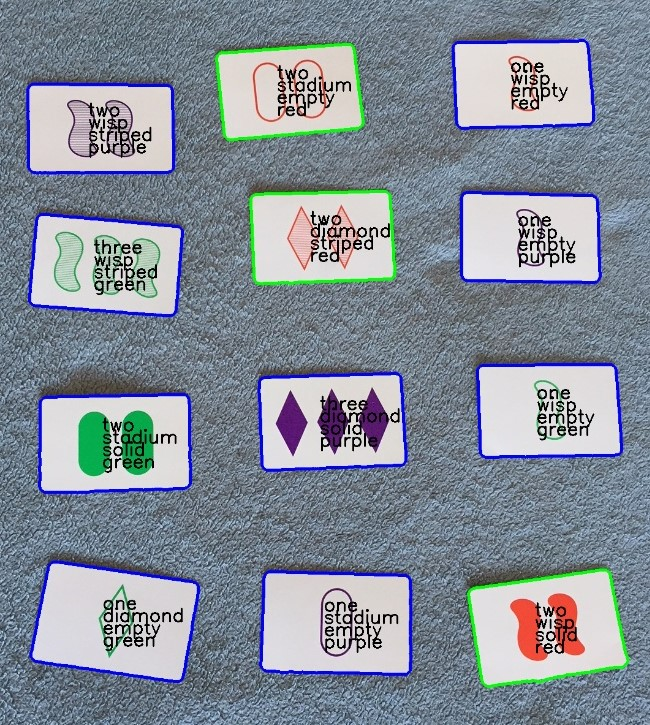

Card Shark
What is Card Shark?
Card Shark is an computer vision program that recognizes card and highlights the optimal moves to play. In particular, it's the world's best SET player!
What is SET?
Set is a card game in which 12 cards are laid out, and each player has to pick out sets of 3 cards that follow specific patterns. Each card is identified by combination of 4 features: shape, color, and fill, and count. A set is formed, when each feature is either the same across all three cards, or unqiue across all three cards.
How it works?
- The application captures a frame, either from file or live video.
- The frame is pre-processed to filter out major variations in brightness.
- The frame is thresholded and we search for shapes (contours), and then filter them to keep only the ones that are the shape and size of cards.
- Each Card is processed to determine it's attributes:
- Corners of card are extracted from contour, and used to project the card into a rectangle of standardized dimensions.
- The cards are pre-processed, converting to grayscale, blurring to reduce noise, and subtracting variation in background brightness.
- Shape and Count: Thresholding is performed, to generate a silhouette of the shapes on the card. This silhouette is compared to ideal templates using intersection over union.
- The silhouettes from the previous step are treated as mask, and erode operations are used with some bitwise operations to generate masks that isolate the edges of shapes, the interior fill of shapes, and the background of the card.
- A copy of the image is converted into HSV space.
- Color:The HSV image is masked to isolate the edge of the shape. The hue is calculated over the mask to find the closest color match.
- Fill/Texture: A mask is used to calculate average saturation. However, it's fairly sensitive to lighting, so we normalize by the average saturation of the background. I had started by looking for stripes, but low quality webcams struggle to focus, so saturation proved more robust to changes in camera/lighting.
- The rules of set are applied, finding all sets.
- Graphics overlays are generated to show outline contours, cards, and sets, as well as overlaying text to show the identified attributes. A key and fps indicator are shown as well.